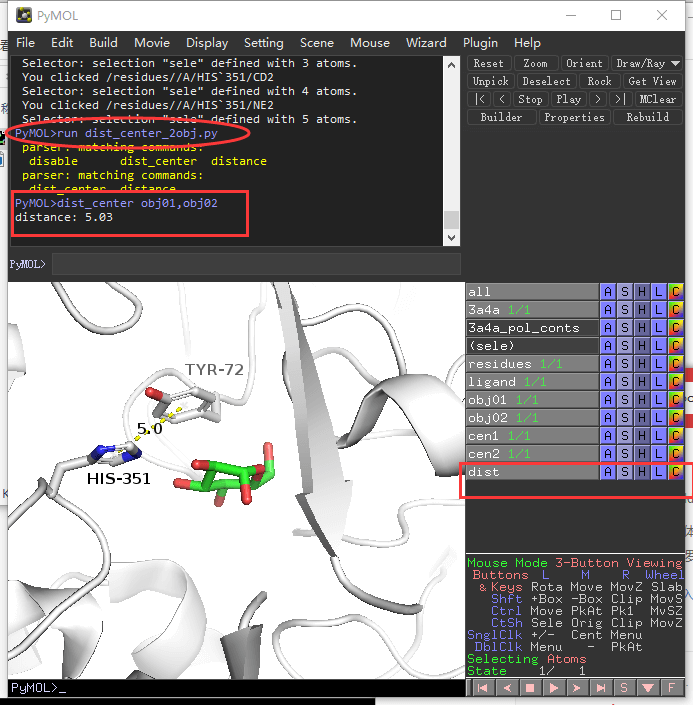

高级教程¶
主要讲述PyMOL中脚本的编写、命令的自定义、插件的编写。
PyMOL脚本、命令、插件¶
PyMOL支持Python 编程语言，故可以借助python让pymol无所不能，pymol除了显示软件，也能成为计算软件。
脚本：把pymol作为一个模块，实现一些计算功能。 命令：pymol中内置了一些命令，如color、dist等，我们也可以自定义新的命令。 插件：pymol中内置了一些插件，如apbs-pdb2pqr等，我们也可以自定义插件。
Note
编写PyMOL脚本、命令、插件，需要有一定的python基础。python教程：HOW2PY
安装PyMOLwiki中的命令¶
这里我以这个命令 `FocalBlur<https://pymolwiki.org/index.php/FocalBlur>`_ 为例进行演示。
- 下载 focal_blur.py脚本，https://raw.githubusercontent.com/Pymol-Scripts/Pymol-script-repo/master/focal_blur.py 比如下载到D盘根目录下面 d:/focal_blur.py
- 打开pymol,在命令窗口输入run d:/focal_blur.py 就完成了安装。
- 运行命令 FocalBlur aperture=4,samples=400,ray=0
FocalBlur一共有5个参数：
- aperture
- samples
- ray
- width
- height
该命名和单反的光圈相关，控制景深的。
命令¶
这里我举一个例子: 计算两个苯环之间的距离或者五元环和苯环之间的距离。
拓展：计算2个object的中心距离。
首先我们为命令起名字，要求是简洁高效，通过命令就能猜测到这个命令的功能。 这里我起的脚本名 dist_center。 核心是在python 脚本中定义这个函数，并cmd.extend拓展命令。 框架如下
1 2 3 4 | from pymol import cmd
def dist_center(obj1="obj01",obj2="obj02",showflag=True):
pass
cmd.extend("dist_center", dist_center)
|
完整代码(dist_center_2obj.py)如下：
1 2 3 4 5 6 7 8 9 10 11 12 13 14 15 16 17 18 19 20 21 22 23 24 25 26 27 28 29 30 31 32 33 34 35 36 37 38 39 40 41 42 43 44 45 46 47 48 49 50 51 52 53 54 55 56 57 58 59 60 61 62 63 64 65 66 | """
DESCRIPTION
measure the distance between the centers of two objects
the object usually is benzene, pyridine and other cyclo object
more information at:
http://pymol.chenzhaoqiang.com/intro/advanceManual.html
AUTHOR
Zhaoqiang Chen, 2017
Please inform me if you use/improve/like/dislike/publish with this script.
email: 744891290@qq.com
"""
from pymol import cmd,math
def getcenterofatoms(atoms):
'''
'''
x=0
y=0
z=0
for atm in atoms:
x+=atm.coord[0]
y+=atm.coord[1]
z+=atm.coord[2]
numatm=float(len(atoms))
x=x/numatm
y=y/numatm
z=z/numatm
return [x,y,z]
def getdist(cen1,cen2):
'''
'''
dx=cen1[0]-cen2[0]
dy=cen1[1]-cen2[1]
dz=cen1[2]-cen2[2]
dist=dx*dx+dy*dy+dz*dz
return math.sqrt(dist)
def dist_center(obj1="obj01",obj2="obj02",showflag=True):
'''
usage1:
dist_center obj01,obj02
usage2:
dist_center obj01,obj02,1
usage3:
dist_center obj01,obj02,0
usage1 is equal to usage2!
'''
obj1atoms=cmd.get_model(obj1).atom
obj2atoms=cmd.get_model(obj2).atom
obj1center=getcenterofatoms(obj1atoms)
obj2center=getcenterofatoms(obj2atoms)
dist = getdist(obj1center,obj2center)
print("distance: %.2f"%(dist ))
if showflag:
cmd.pseudoatom('cen1', pos=obj1center)
cmd.pseudoatom('cen2', pos=obj2center)
cmd.distance("dist","cen1","cen2")
cmd.extend("dist_center", dist_center)
|
演示如下：
载入蛋白，运行run dist_center_2obj.py命令； 把TRY-72侧链苯环6个原子保存为obj01; 把HIS-351侧链咪唑环的5个原子保存为obj02; 运行命令 dist_center obj01,obj02 即可测量距离。
{kind=link}